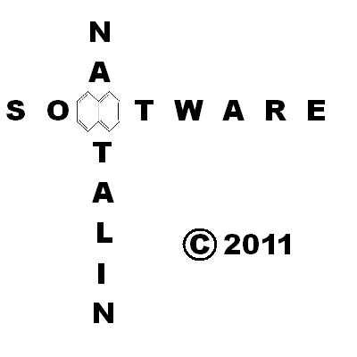

Руководство по игре "Нафтометро"
История.
В 70-ых годах ХХ века в городе Ленинграде на Ленинградском ордена Красной звезды Вагоностроительном заводе им. И. Е. Егорого начались эксперименты по дальнейшему
улучшению вагонов типа "Ем". В результате в 1974 году были произведены первые опытные вагоны нового типа. Они получили обозначение "Ё": головные "Ёг" и
промежуточные "Ёп". Основные отличия от вагонов Ем: отсутствие в промежуточных вагонах кабин управления, немного уменьшенная масса кузова, новые более мощные
двигатели, улучшенная электроника, а также в кабине машиниста была убрана переходная дверь и за счёт этого улучшен обзор. С 1975 по 1981 годы выпускались небольшими
сериями, однако затем производство было прекращено в пользу более совершенной разработки Мытищинского Вагоностроительного Завода - "номерных".
ТТХ вагонов "Ем", "Ё" и "номерных":
| | Ем | Ё | Номерной |
| Головные/промежуточные | Ема/Ем | Ёг/Ёп | 81-717/81-714 |
| Начало выписка и эксплуатации | 1967 | 1974 | 1976 |
| Тара, т | 32,2 | 31,7/31,1 | 34/33,5 |
| Длина, мм | 19210 | 19210 | 19206 |
| Ширина, мм | 2700 | 2700 | 2670 |
| Высота, мм | 3695 | 3690 | 3650 |
| Конструктивная скорость, км/ч | 90 | 90 | 90 |
| Ускорение/замедление, м/с/с | 1,2/1,1 | 1,2/1,1 | 1,2/1,1 |
| Мощность, КВт | 4х68 | 4х90 | 4х110 |
Установка игры
По большому счёту, устанавливать ничего не надо. Но радоваться нечему. Примите к сведению:
- Это 3d игра. Она для работы требует OpenGL. Обычно на компах, на которых играют в такие игры, OpenGL сам собой заводится. Но если его у вас нет, можете попытаться
скачать в интернете.
- В эту игру играли под Windows XP и Windows 7 x32. Что с ней творится под другими ОС - неизвестно.
- Игра для требует библиотеку bass.dll (также когда-то требовала qtintf.dll и qtintf70.dll, но вроде перестала). Она прилагается в папке с игрой. Не исключено, что этого окажется недостаточно для запуска игры.
Попытайтесь эту библиотеку положить в то метсо, которое Винда знает как PATH. В Windows XP оно ищется так: Мой компьютер->Свойства->Дополнительно->Переменные среды.
В Windows 7 примерно так: Панель управления->Система и безопасность->Система->Дополнительные параметры системы->Переменные четверга.
Что делать в других ОС - науке не известно. Другие библиотеки, если потребуются, постарайтесь добыть в интернете.
- После того, как вы прочитали и осознали, попытайтесь запустить экзешник (Naftometro.exe). Если запустилось - наслаждайтесь поездкой. Если нет - пишите разработчикам :-)
Обращение по случаю версии 0.3
Наконец-то она вышла. Новая промежуточная версия.
Не всё красиво, баги есть, ещё очень-очень многое предстоит сделать. Но 0.3 - это уже кое-что.
Разработчики будут рады услышать Ваши комментарии. Пишите, например, на адрес naftometro@ya.ru
Управление
W - реверс вперёд
S - реверс назад
D - увеличить газ
A - уменьшить газ
K - увеличить тормоз (пневматический)
L - уменьшить тормоз (пневматический)
; - аварийное торможение
P - пауза
M - перевести стрелку
С - смена кабины
N - увеличить силу света фар
B - уменьшить силу света фар
Стрелочки - вращение головой
Пробел - Покаяние (за проезд красного светофора)
Полезные ссылки
Производители
Основным автором игры является Иван Давыдов -
vk.com/davidovi. Фирма Naфtalin Soфtware.
